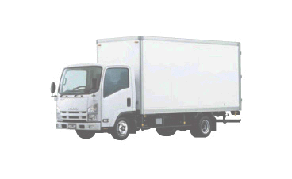
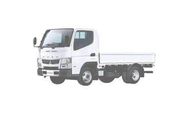
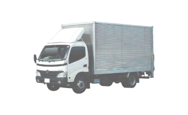
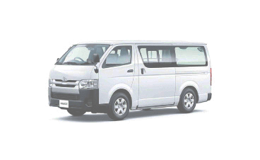
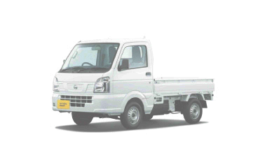
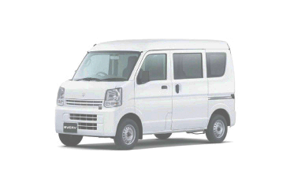

4tトラック
４tトラックは汎用性が高いため、運送業界はもちろん非常に多くの現場で重宝されています。
4tパワーゲート
パワーゲートとはトラックの荷台の後ろに装備する、荷物の積み下ろし用の昇降機のことです。
4tウィング
大型のお荷物も側面からの積み降ろしが可能なため、輸送がスムーズに行えます。
4tウィングパワーゲート
ウィングが開いた際には荷台パネルが屋根代わりになるため、雨天時の積み降ろしも安心です。

4t平ボディ
平ボディは主に重機や大きな機会等を運ぶ為に設計されています。（エアーサスペンション有り）

3tパワーゲート
パワーゲートとはトラックの荷台の後ろに装備する、荷物の積み下ろし用の昇降機のことです。

2tトラック
４tトラックでは入れない細い道路や、住宅街などにはこの２tトラックでお伺い致します。
２tロング パワーゲート
パワーゲートとはトラックの荷台の後ろに装備する、荷物の積み下ろし用の昇降機のことです。
２tトラック・ショート
４tトラックでは入れない細い道路や、住宅街などにはこの２tトラックでお伺い致します。 通常よりは短い作りの車です。

ハイエース
２tトラックでは入れない細い道路や、住宅街などにはこのハイエースでお伺い致します。

軽トラック
一軒家のガレージのお荷物もダイレクトにガレージから運搬でます。

軽バン
小さな荷物のルート配送で役立つトラックです。